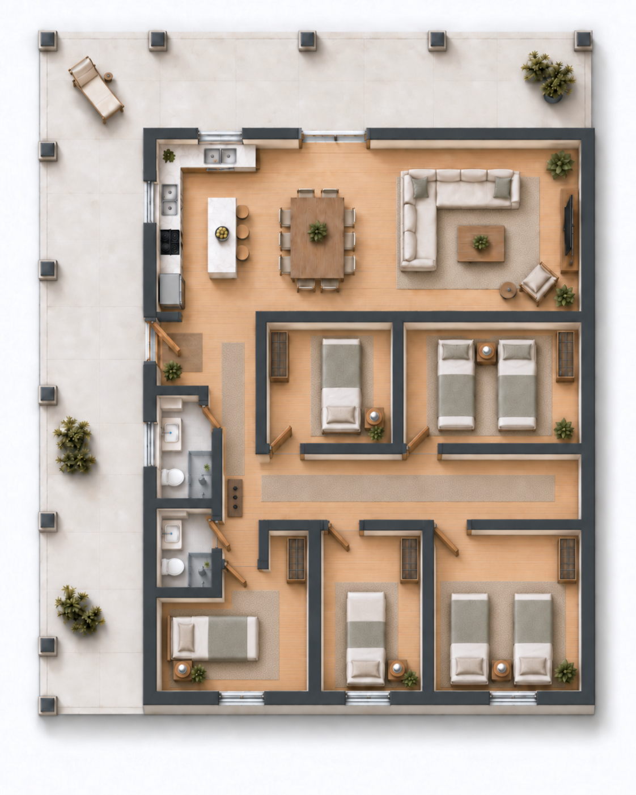
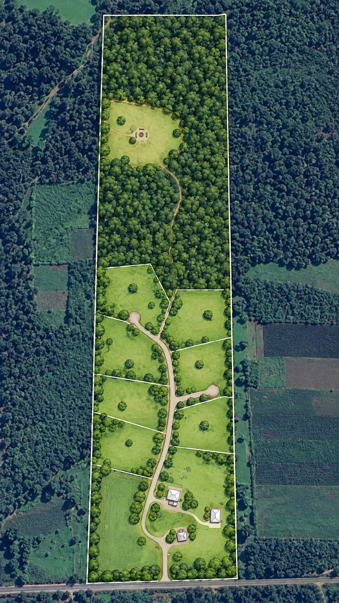
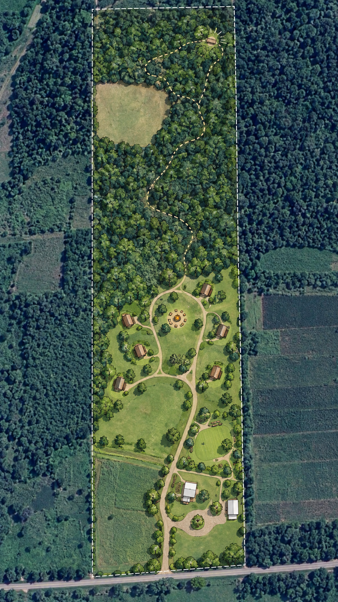
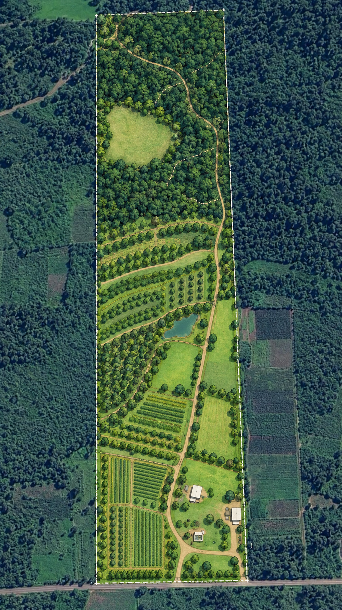
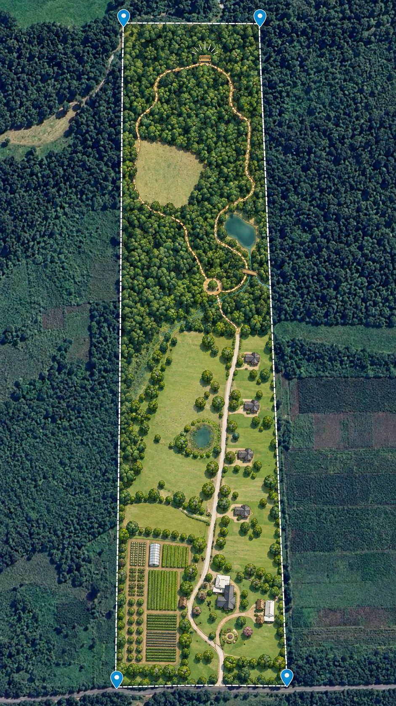

20 hectares with several development directions
Granja del Sol already combines a home, agriculturally usable land, and a nature property. For buyers with an entrepreneurial perspective, the prepared building areas and the size of the property provide additional starting points for different concepts.
Existing assets instead of a blank slate
The existing buildings, prepared building areas, and different land types open up several development directions. The examples on this page build on that starting point and show how differently a buyer could develop the property further.
Move-in-ready main house
The existing home can serve as a private residence, operator’s home, or base during a gradual development process.
Prepared building areas
A smaller bungalow and a larger concrete slab already provide concrete starting points for additional buildings.
Different land types
Cropland, pastures, the residential area, and woodland allow for concepts in which not every part of the property has to serve the same purpose.
The existing slabs as a starting point
Smaller slab: one footprint, different build-out concepts
Both visualizations refer to the same smaller slab. They deliberately show two different strategies: one compact structure with plenty of covered outdoor space, and one that uses substantially more of the existing slab as interior space.
Possible roles range from a vacation or guest house to a separate living unit or a small family home.
Two options for the same smaller slab


Larger slab: three possible use concepts
The larger slab can also be used with very different priorities. These three examples range from a family home and flexible shared living to a solution focused more strongly on guests or temporary residents.
More space for different concepts
An earlier plan used approximately 98 m² (about 1,055 sq ft) as enclosed interior space within a much larger covered footprint. Connections for columns are prepared around the outer edge, and several structurally interesting foundation lines are also present.
The current concepts illustrate how differently this starting point could be developed.



Four examples of how the land could be developed further
Cropland, pastures, the residential area, and woodland do not have to follow the same business model. The four sketches emphasize different priorities and show how the existing areas could be combined and developed in stages.
The illustrations are non-binding concept sketches and do not represent approved subdivision, building, or other development rights.




From idea to project
Which development path makes sense depends on the specific goal. For a real project, the ideas then become technical, legal, and economic decisions.
Construction & structural design
Foundations, existing rebar connections, drains, and the desired roof and wall construction must all fit the specific plan.
Permits & subdivision
For commercial use, further construction, or division into separate lots, the applicable requirements need to be clarified with the relevant authorities and professionals.
Economics
Construction costs, demand, operations, rental potential, and possible resale values determine which approach fits the buyer’s own investment model.
One starting point—different development paths
The examples are intended to make possibilities visible and inspire your own ideas. All factual information about the property is available in the full listing.
Back to the full property listing